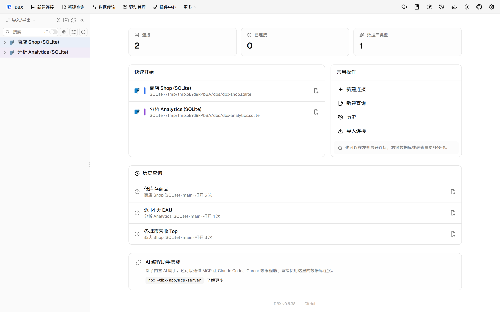
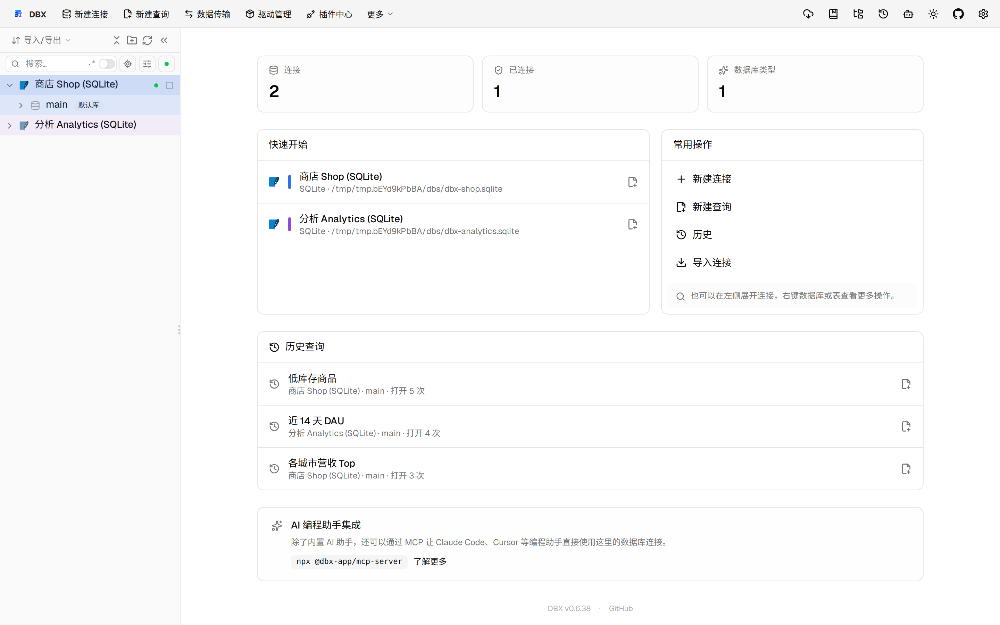
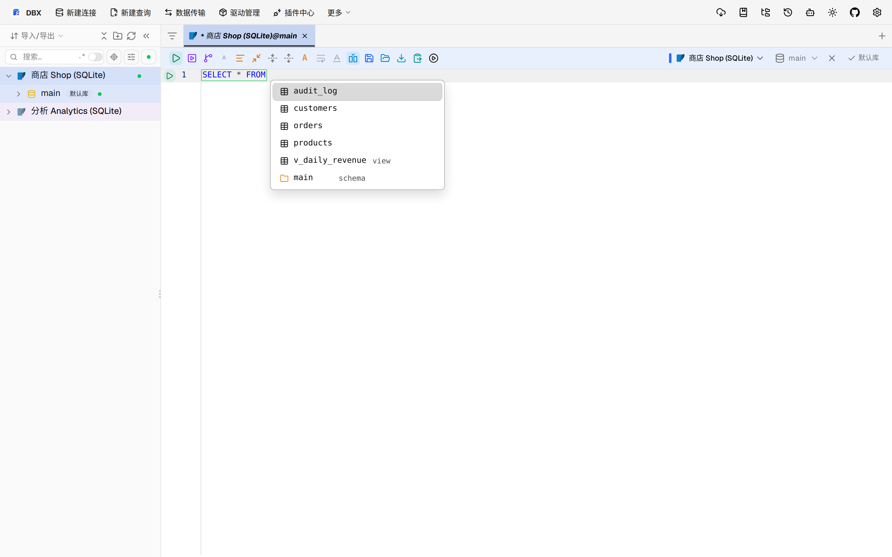
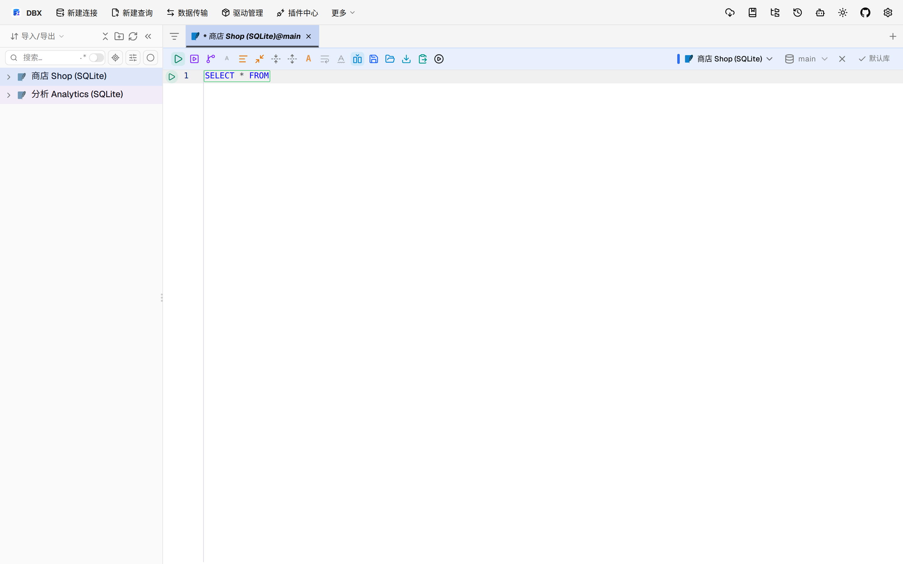
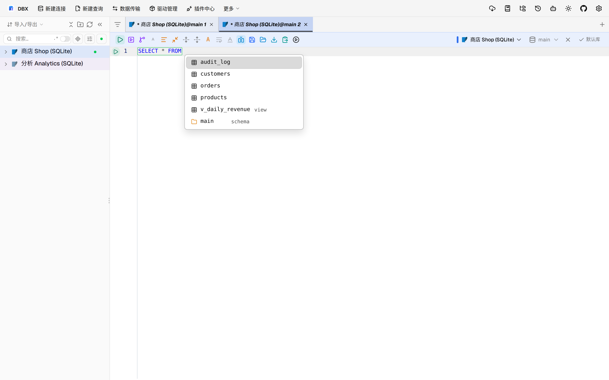

#11475 界面预览
commit 3b94bf1 · 回到 PR · 这次改动让 OceanBase Oracle 的同义词/引用名在补全、语义诊断和表元数据里保留真实解析目标身份，并把当前 schema 单独传递，避免把同义词当成普通本地表处理。界面上主要能看到 SQL 编辑器里的列补全更准确，表详情/编辑相关元数据会跟着真实目标表走。
⚠️ 这次录制有 7 步没能按计划执行；带 ⚠️ 的截图拍摄于步骤失败之后，画面未必是说明文字所描述的状态。
红线是鼠标走过的轨迹，红色圆环是一次点击；底部文字是这一步在做什么。多个场景各自从应用初始状态开始。空格暂停，← → 逐段查看。

打开编辑器查看现有树与入口 · 应用打开后的首页，确认左侧连接树和编辑器入口都在

⚠️ 打开编辑器查看现有树与入口 · customers 表打开后的数据网格

⚠️ 打开编辑器查看现有树与入口 · SQL 编辑器中输入查询前缀后的状态，观察补全上下文

查看数据网格的表元数据 · 订单表打开后的数据网格，查看表头、网格工具栏和元数据区域

在 SQL 编辑器里看补全上下文 · SQL 编辑器中输入查询前缀后的状态，观察补全是否弹出并与当前连接上下文一致